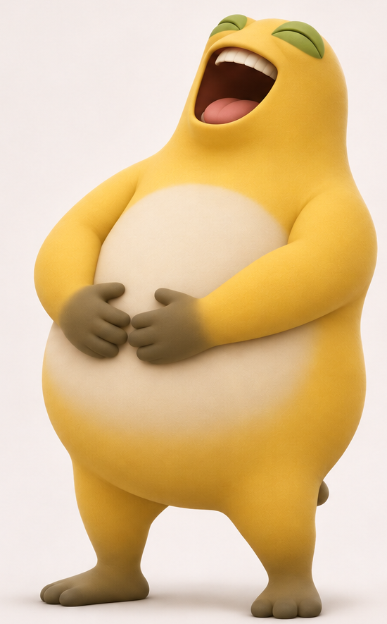
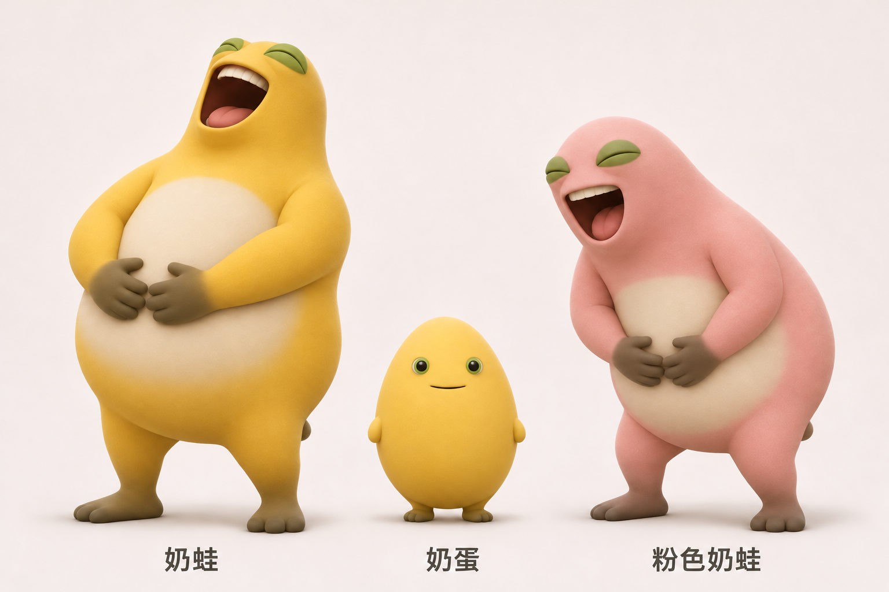
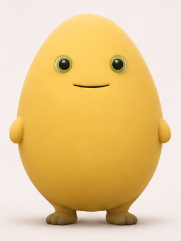
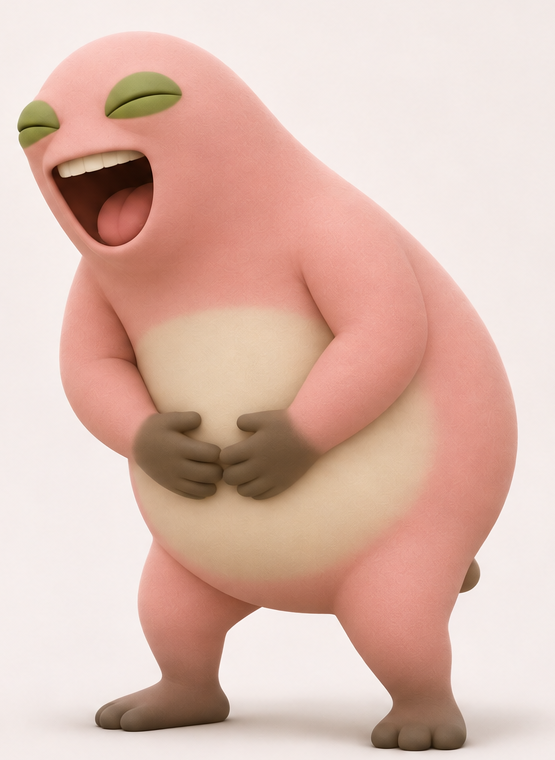

01 / ORIGINAL

奶蛙 NAIWA
大大一只，笑声也大大方方。小院里的快乐发动机。
- 体型
- 大梨形 · 奶油肚皮
- 性格
- 热情、爱笑、自带气氛
- 日常照顾
- 喂点好吃的，陪它玩一会儿。
A LITTLE GARDEN, A LOT OF LAUGHTER
奶蛙、奶蛋，还有一只粉色的快乐。
挑一位小伙伴，把平凡的日子养成好心情。
三位奶家人 · 一份专属陪伴

THE MILK FAMILY / 01—03MEET THE FAMILY
先认识一下，再带一位回家。

大大一只，笑声也大大方方。小院里的快乐发动机。

小小一颗，安静看着你。发呆也是一种认真生活。

把快乐换成草莓牛奶色，笑起来一样停不下来。
YOUR LITTLE COMPANION
我的小伙伴
小院正在准备迎接新朋友。